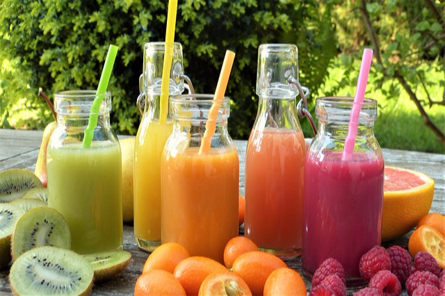
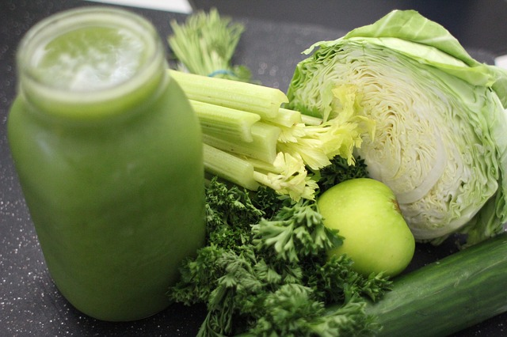
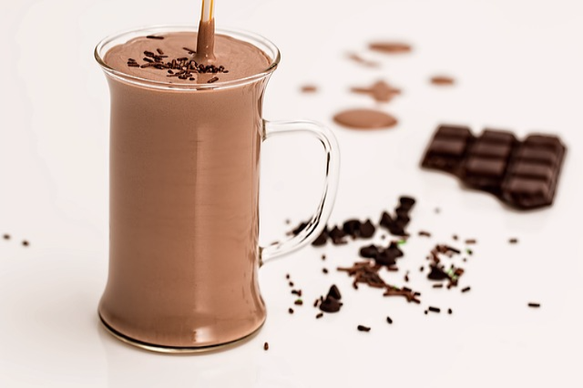
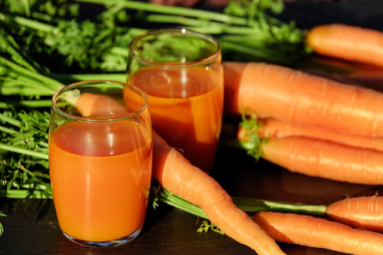
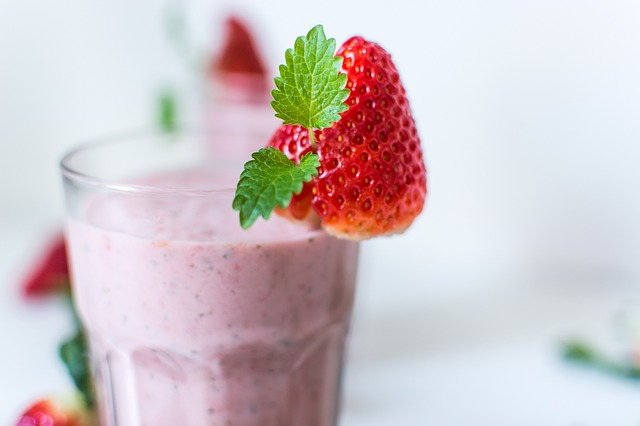
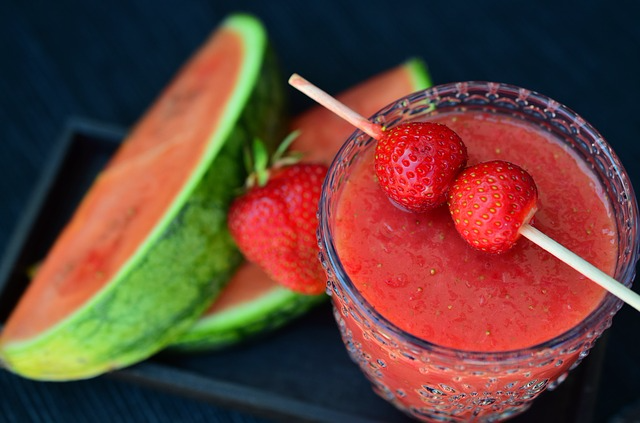

Super-Charged Healthy Meals & Drinks
How to Transition to the Life-Saving, Whole-Food, Plant-Based Diet.

MASON JAR SMOOTHIE
- 1 cup unsweetened almond or soy milk
- 1 cup fresh spinach leaves
- 1/2 cup frozen broccoli florets
- 1/4 cup frozen pineapple
- 1/2 medium-large frozen banana
- 1 tbsp raw nut butter
- 1 tbsp chia seeds
- 1 tbsp hemp seeds
Cut all fruit & veggies into chucks, put in jar, top with nut butter and seeds, place jar in freeze, and thaw when ready to use, add almond/soy milk when ready to use. Blender all ingredients.

MEAN GREEN JUICE
- 1 cup unsweetened coconut and/or nut milk
- 2 cucumbers
- 8 celery stalks
- 4 apples
- 16 leaves of kale with stalks
- 1 lemon
- 1 tsp vanilla extract
- 2 one inch pieces of ginger
Peel cucumbers and lemon; and core apples. Run all ingredients through your juicer.

CHOCOLATE SMOOTHIE
- 1 cup unsweetened coconut and/or nut milk
- 1 banana, sliced
- 2 medjool dates, pitted
- 2 tbsp raw almond butter
- 2 tbsp raw cacao powder
- 1 tbsp chia seeds
- 1 tsp vanilla extract
- 3/4 cup ice cubes
Place all ingredients in a blender, blast on high for 30 to 60 seconds until smooth and creamy.

CARROT JUICE
- 2 cups unsweetened coconut milk
- 2 cups carrots, roughly chopped
- 1 tbsp fresh lemon juice
- 1 tsp fresh ginger, peeled
- 1/2 tsp nutmeg and cinnamon
- 1 tsp vanilla extract
- 3/4 cup ice cubes
Place all all ingredients in blender, blast on high for 30 to 60 seconds until smooth and creamy.

STRAWBERRY SMOOTHIE
- 2 cups unsweetened coconut and/or nut milk
- 2 cups frozen strawberries
- 1/1 cups raw unsalted cashews
- 1/4 cup madjool dates, pitted
- 1 tbsp chia seeds
- 1 tsp vanilla extract
- 1 pinch of celtic sea salt
Place all ingredients in a blender, blast on high for 30 to 60 seconds until smooth and creamy.

WATERMELON JUICE
- 2 cups watermelon, rind removed &chopped
- 1/4 of a lime, peeled
- 2 tbsps honey
- 3/4 cup ice cubes
- Mint leaves (for garnish, optional)
- 1 slice of lime (for garnish, optional)
Run all ingredients through your juicer.